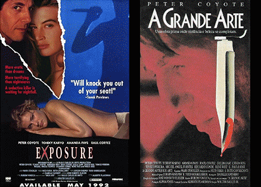
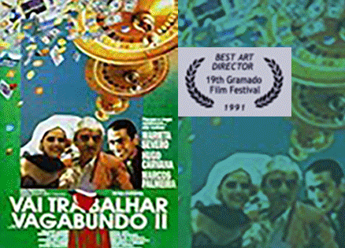

For more than 7 years I worked in Brazil as an Art Director or Set Designer in many television shows, feature films, short movies, video-clips and many theater plays.
I created and designed scale drawings, signs and props and supervised set construction and decoration teams, either in studios or locations, achieving the creation of more than 1000 sets.

1991 - Drama, Thriller Director: Walter Salles Jr. (Central Station & Motorcycle Diaries) Stars: Peter Coyote, Tchéky Karyo, Amanda Pays Art Directors: Marlise Storchi - Rita Ivanissevich An American photographer in Rio de Janeiro becomes involved in the world of "knife culture" when he sets out to find the killer of one of his models.

1991 - Awarded Best Art Director at the 19th Gramado Film Festival in 1991. Director: Hugo Carvana Stars Hugo Carvana, Marieta Severo, Marcos Palmeira Art Directors: Cristiano Amaral & Rita Ivanissevich Exiled in Acapulco, the bon vivant Dino cheats a rich widow into financing his coming back to Brazil. To avoid getting caught, he hides in a coffin. His fake burial is celebrated in high style and it doesn't take long before he starts getting himself into weird situations.
Under construction